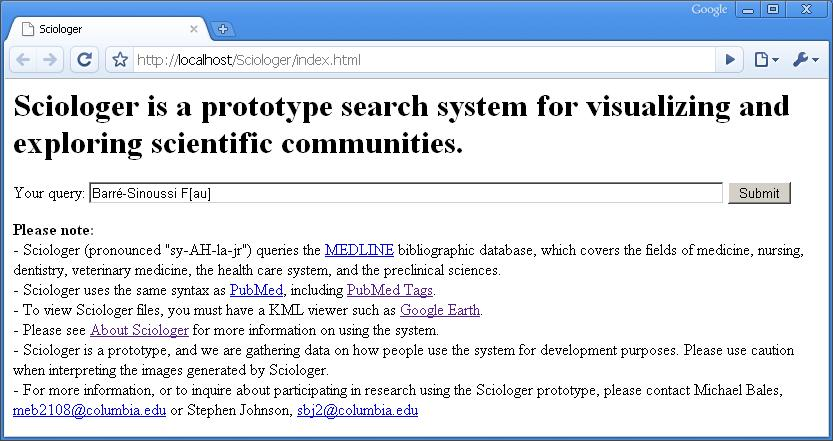
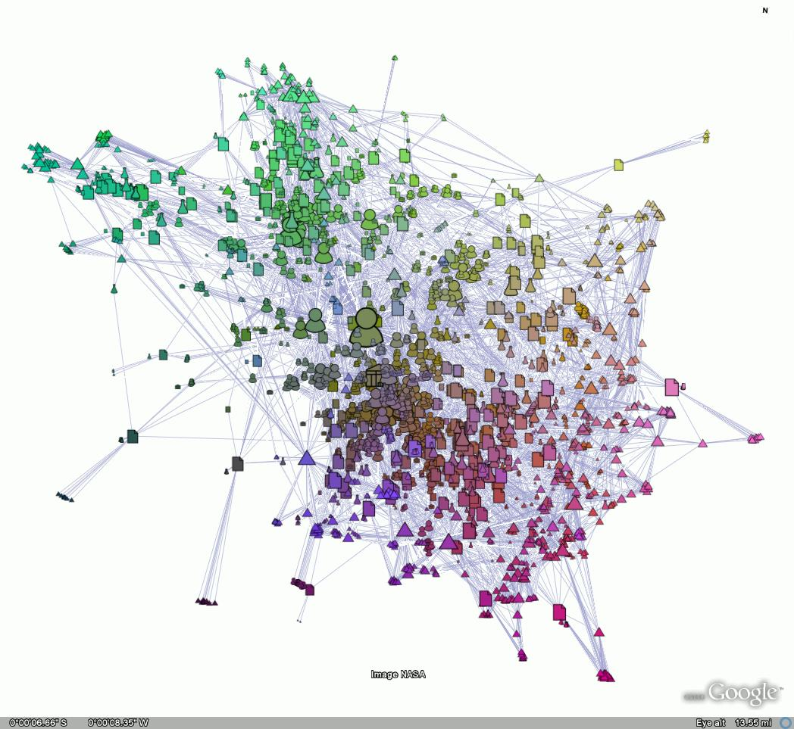
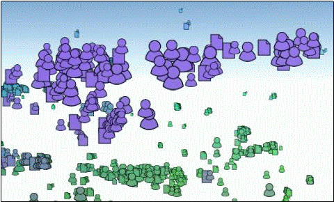
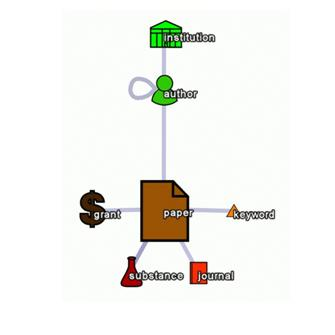
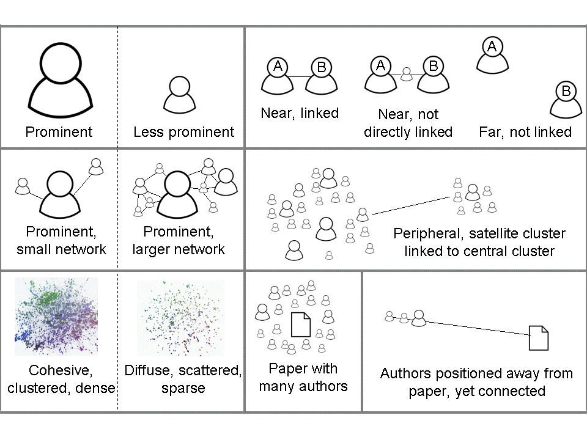

|
Sciologer |
|
|
Michael E. Bales, meb2108@columbia.edu |
|
|
Stephen B. Johnson, sbj2@columbia.edu |
|
|
Department of Biomedical Informatics |
|
|
Columbia University |
Please note: Sciologer
(pronounced "sy-AH-la-jr") is currently in
the test phase and is not yet available for public use. This page provides
information about the system and describes how it is used. To try out the Sciologer prototype, or to inquire about participating in
research using the prototype, please contact Michael Bales at meb2108@columbia.edu.
{kind=link}
Sciologer is a search system designed to help researchers
understand complex scientific communities. Sciologer
may be useful for:
·
identifying
experts and potential collaborators
·
identifying
journals in which to consider publishing
·
finding
hidden patterns in scientific communities and “hot” research topics
·
understanding
how a field is organized, and learning about results in other fields
Using the system
Sciologer queries the MEDLINE [1] bibliographic database, which covers the basic
biomedical sciences, the health care system, medicine, nursing, dentistry, and
veterinary medicine. The system uses the same syntax as PubMed, including PubMed Tags.
To view Sciologer
files, you must have a KML viewer such as Google Earth.
To use the system, enter a PubMed/MEDLINE query in the search box.
In this example, the search
is for articles written by Françoise
Barré-Sinoussi, a Nobel Prize winning researcher
based at the Institut Pasteur.

The system returns the search
result.

In this network there is an
icon representing the author in the center. The author icon is surrounded by
other icons representing:
1. published articles
2. the journals in which the articles were published
3. MeSH headings
4. substances
5. grants
6. institutions with which the author was affiliated when
the articles were published
Things
to keep in mind about Sciologer
Here are some things to keep
in mind about the networks generated by Sciologer:
The size of an icon corresponds to the number of links
radiating from each author, institution, journal, article title, grant,
substance, or MeSH keyword.
In the example above, the
largest icon is that of the author, Dr. Barré-Sinoussi.
The next largest icons are those of her most frequent coauthors, the journals
in which she has published the most, and her most
prominent institutional affiliation (Institut
Pasteur). By navigating around the network we learn which topics Dr. Barré-Sinoussi has published on during her career. We can
identify groups of articles pertaining to her research on the discovery of HIV
(human immunodeficiency virus), HIV genetics, and vaccines against HIV, among
other topics.
The arrangement of the icons (elements) depends on how
things are connected.
Sciologer shows the connections between authors, institutions,
journals, article titles, grants, substances, and MeSH
keywords. Each element appears at only one location in the network.
Relative distance of the
icons has meaning. When there are connections between the elements, their icons
will appear closer together.
·
Two authors who
have collaborated on a paper will be connected by a line. Unless other elements
influence their placement significantly, the authors will also be positioned
close to one another.
·
By contrast, if
there are no links between two elements, their icons are not likely to be drawn
close to one another and they will not be connected by a line.
·
In large
networks, unrelated elements may be positioned near one another, though they
will not be connected by a line.
To get a sense of how long Sciologer will take to run your query, try your query in PubMed first.
·
Before you do a
search using Sciologer, we recommend that you first
try your query in PubMed.
- This will tell you how many MEDLINE records Sciologer will have to process.
- Sciologer’s running time depends upon the number of papers retrieved in the PubMed query. The more papers, the longer the running time.
- Sciologer can download and process around 200-250 records per minute.
Use of color in Sciologer
Color is determined by levels
of red, green, and blue, which map to node position in X, Y, and Z space.
Clusters that are farther away look smaller and are a different color.

Assignment of links in Sciologer
Sciologer assigns links between elements in the PubMed query according to the following linking schema:

The paper’s first author is
linked to the institutional affiliation. Authors are linked to their coauthors.
(For papers with more than ten coauthors, only the first ten authors are linked
to one another.) Authors are linked to papers. Papers are linked to grants, MeSH keywords, substances and journals.
Optimizing Google Earth for use
with Sciologer
After installing Google
Earth, the following tips will improve your experience with Sciologer.
·
Under tools,
options, touring, increase the “Fly-To Speed”.
·
In the “Layers”
menu on the left, uncheck the box next to “Primary Database”. This will remove
other data layers that may interfere with Sciologer networks.
·
If you want to
view other Google Earth imagery, use the “Layers” menu on the left and uncheck
boxes corresponding to Sciologer queries.
For very large networks there may be a pause before the network appears in
Google Earth.
When you exit Google Earth,
you may see the following message:

If you select “Yes”, the Sciologer networks you are working with will be available
in the Google Earth menus the next time you open Google Earth. Because Google
Earth may take a long time to open multiple Sciologer
networks, we recommend clicking “No” when this message appears. (You may open
previously generated Sciologer networks from within
your local file system.)
Using Sciologer
networks in Google Earth
Navigating in Sciologer networks works best with a 3D mouse such as a Space Navigator.
A conventional mouse may also
be used.
To navigate in Sciologer networks using a conventional mouse:
Pan: Click
with the left mouse button and drag the view.
Zoom: To zoom
in or out, first center the view. Then either 1) hold down the right mouse
button and move the mouse up or down; 2) use the vertical slider control in the
upper right corner of the viewing window; or 3) double-click to zoom in,
right-double-click to zoom out.
Get details:
To identify a given element, such as an author, paper, or journal, click on it.
Its complete label will be shown.
To prepare Sciologer networks for reuse:
Draw a circle around a group of nodes*: Use the command Add,
Polygon. A window “Google Earth – New Polygon” will appear. Using the
mouse, drag a lasso around the nodes you wish to highlight. Google Earth will generate
a sequence of points along the path. Drag these points to modify the shape. Use
the Style, Color tab to modify the
polygon’s properties.
Add a custom label*: To add labels to a network, use the command Add, Placemark.
Google Earth will place an icon in the center of the view. Click on the icon
and drag it to the desired position. To remove the icon, click on the icon in
the upper right corner of the “Google Earth – New Placemark”
window, and click the “No icon” button. Select the Style/Color tab and change
the Label’s scale to the desired font size.
Save the current vantage point: To save your current vantage point, use the command Add, Polygon. Click the View tab and
click “Snapshot current view” and click OK. The view will be saved in the
left-hand navigation bar, and you can return to it later by double-clicking on it.
(To return to the vantage point, the network itself must be loaded and visible,
i.e., its checkbox must be checked.)
* 2D images only
Dealing with common problems
when viewing Sciologer networks using Google Earth
A previous network is interfering with the network
that I generated.
When you open a new KMZ file
in Google Earth, Google Earth keeps previous Sciologer
networks open. To hide previous networks before you run a new search, use use the left-hand navigation panel to clear checkboxes
corresponding to previous searches.
When I click an icon, it won’t show the label but I
see several lines radiating out from the icon.
Sometimes, when you click on
an icon to see its full label, you will see lines radiating outward from where
you clicked. If this happens, it means that Google Earth is unable to determine
which icon you’re clicking on. When this happens, simply identify which element
you wish to click on and then click on it a second time. (To prevent this from
happening, zoom in first -- so that all of the icons are visually distinct --
before clicking for details.)
I can’t find the network.
When your search is ready,
Google Earth will automatically position the network in the center of the viewing
window. If you inadvertently navigate away from the network, you can return to
it easily. Either zoom out until you can see the network again, then center it
and zoom back in; or, go to the controls on the left-hand side of the page,
identify the network you want to see, and then double-click on its label.
When I use the checkboxes to turn on nodes, node
labels, or links, the wrong nodes or links appear in the network.
When multiple networks are
open, Google Earth will display separate node, node label, and link checkboxes
for each network. Verify that you are operating the checkboxes for the network
that you are currently viewing.
When I use the checkboxes to turn on nodes, node
labels, and links, nothing happens in the network.
When you use checkboxes to
turn nodes, links, and node labels on and off, you may see no immediate change
in the network. If this happens, find the network in the left-hand window and
double-click on its label to re-center the view. For very large networks, there
may be a delay when toggling links on and off.
When I tilt the view, links above the horizon turn
black.
In Google Earth, Sciologer links displayed above the horizon may appear very
dark, making the network difficult to read. As a workaround for 3D navigation,
uncheck the “links” checkbox in the left-hand navigation menu.
Google Earth zooms in or out much farther than I
expected.
This behavior may occur if you
initiate a zoom-in or zoom-out immediately after clicking on a node to display
its details. To prevent this problem, close the element details window before
zooming in or zooming out.
Refining search results
In Sciologer
there are several ways to refine your search query to “drill down” and find
results of interest:
1. Toggle nodes and node labels.
In Google Earth, you can turn
nodes, node labels, and links on and off using the checkboxes on the left side
of the screen:
1. Use the “Find” feature in Google Earth to locate an
element of interest.
To use the “Find” feature,
use the controls on the left-hand side of the Google Earth window. The steps
below describe how to locate a particular author within the network, but they
could be applied to any of the Sciologer entity types
(journals, article titles, institutions, etc.)
·
Click the plus
sign corresponding to the network you are exploring.
·
Click the plus
sign next to “Node labels”
·
Click to
highlight the type of element you wish to find. If you are looking for an
author, click “person”.
·
In the Edit menu at the top of the screen,
select Find (or, in Windows, use the
keyboard shortcut Ctrl+F.) A query box will appear.
·
Type the name of
the author you wish to locate in the network.
·
As you type, the
author’s name will be highlighted.
·
Double-click on
the author’s name to center the viewing window over this author.
·
Tip: If you still
don’t see the author, use the left-side controls to click the box next to
author names. This will turn author labels on.
·
If your network
is large, you may need to zoom in considerably before the author’s name will
appear.
2. Use linkouts.
You can use linkouts to do additional queries. Linkouts
work well for querying single elements, such as an author’s name, a journal, or
an article title. For more complex queries, return to the
main search screen.
Using the Sciologer
linkout will do another Sciologer
query on the element in question. The other two linkouts
will do searches in PubMed and Google Scholar.

Saving images generated by Sciologer
To take a screen capture of an image in Google Earth, use the menu commands File, Save, Save image, or, in Windows, the key sequence Ctrl+Alt+S.
Selected Sciologer
motifs and network features

Examining links to
check on whether two elements are connected
Two elements that appear to
be the same color are not necessarily connected. In large networks, especially,
two elements that appear to be the same color may be positioned close together
in space, but may not actually be connected by a line. To find out whether they
are connected, turn on the links using the toggles on the left-hand side of the
screen (Google Earth).
PubMed syntax guide for Sciologer
queries
PubMed syntax includes the Boolean operators AND, OR, and NOT.
It supports phrase searching by using quotation marks. The wildcard character
is the asterisk (*).
Below are some tags that you
may wish to use in your queries. The tags are not case-sensitive.
To search for a specific author,
use the [AU] tag:
Dannenberg AL [AU]
To search for a journal
title, use the [TA] tag:
Journal of the American
Medical Association [TA]
To search for an institutional
affiliation, use the [AD]
tag:
Rice University [AD]
To search for a date
of publication, use the [DP]
tag:
adiposity AND 2007:2008 [DP]
Selected additional tags:
Grant Number [GR]
Language [LA]
Last Author [LASTAU]
MeSH Major Topic [MAJR]
MeSH Subheadings [SH]
MeSH Terms [MH]
Substance Name [NM]
Title [TI]
Title/Abstract [TIAB]
1. National
Library of Medicine (US). MEDLINE. Bethesda, MD, USA:
National Institutes of Health, Bethesda, MD, USA; 2005.